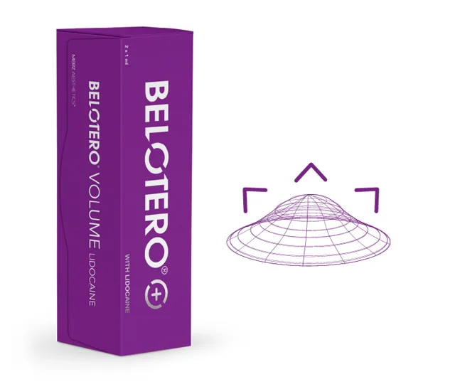
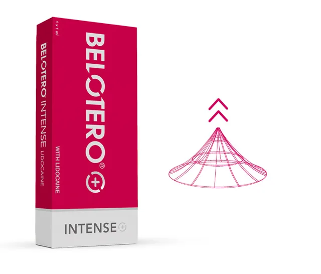
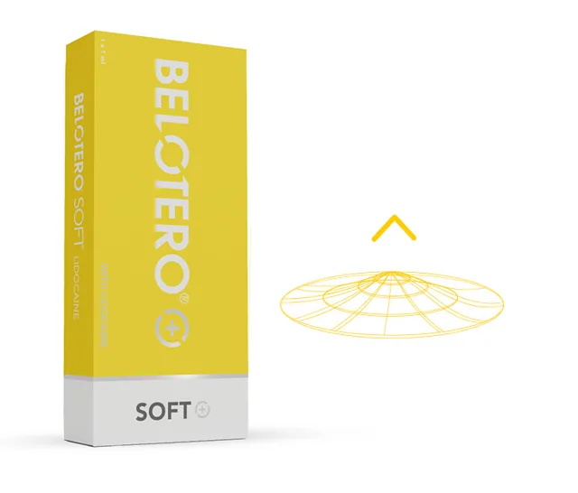
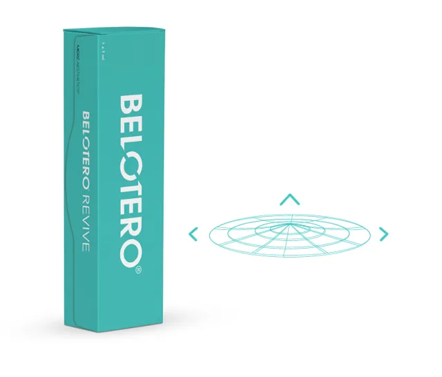

Филлеры · сравнение производителей
Merz или Galderma: чьи филлеры лучше
Ни одна из компаний не лучше другой целиком. Гиалуроновые филлеры обеих одобрены FDA, и в прямых сравнениях Belotero (Merz) показал себя не хуже Restylane (Galderma). Независимых исследований, где один производитель обходит другого, я не нашёл: все прямые сравнения оплачены самими компаниями. Galderma крупнее и предлагает больше гиалуроновых филлеров с отдельным одобрением FDA на конкретную зону лица. У Merz есть Radiesse на гидроксиапатите кальция, у Galderma аналога нет. Поэтому выбирать нужно по зоне и конкретному препарату, а важнее бренда опыт врача.
$1,10 млрдпродажи филлеров и биостимуляторов Galderma за 2025 год, +8% в постоянных валютных курсах
≈ €2,5 млрдвыручка всей группы Merz за последний финансовый год; отдельной выручки Merz Aesthetics в открытых источниках я не нашёл
62,9% / 64,9%Belotero Balance против Restylane: доля пациентов с улучшением через 6 месяцев, разница в пределах «не хуже»
79% / 43%Radiesse против Restylane через 12 месяцев. В исследовании 60 пациентов, оплатил его производитель Radiesse
Короткий ответ
Лучшей фирмы нет
По гиалуроновым филлерам компании на равных. Сначала решите, какую зону и задачу закрываете и нужен ли обратимый гель, потом выбирайте препарат. На результат больше всего влияет врач.
Больше вариантов
Galderma: Restylane и Sculptra
В США у Restylane отдельные одобрения на губы, область под глазами, подбородок и виски. Sculptra на поли-L-молочной кислоте стимулирует выработку собственного коллагена.
Чего нет у Galderma
Merz: Radiesse и Belotero
Radiesse на гидроксиапатите кальция в США одобрен для линии челюсти, кистей рук и декольте. Belotero Balance — мягкий гель для поверхностных морщин и области под глазами.
1Компании
Обе компании работают в медицинской эстетике давно и выпускают полный набор: гиалуроновые филлеры, биостимулятор и ботулотоксин. Galderma с 2024 года торгуется на бирже и публикует отчётность по направлениям. Merz принадлежит семье владельцев, и отдельной выручки по эстетике в открытых источниках нет.
| Параметр | Galderma | Merz Aesthetics |
|---|
| Страна | Швейцария (Цуг) | Германия: группа Merz во Франкфурте, подразделение Merz Aesthetics в Роли (США) |
| Владелец | Публичная компания: на бирже SIX с 22.03.2024. 08.12.2025 L'Oréal объявила, что докупает акции и увеличивает долю до 20% | Семейная компания, основана в 1908 году |
| Откуда филлеры | Компания создана в 1981 году как совместное предприятие L'Oréal и Nestlé. Restylane разработала шведская Q-Med: в Европе препарат продаётся с 1996 года, в FDA одобрен 12.12.2003. В январе 2011 года сообщалось, что Galderma покупает Q-Med примерно за $970 млн | Radiesse достался Merz вместе с BioForm Medical, купленной в январе 2010 года за $253 млн. Belotero входил в портфель Merz ещё до этой сделки |
| Выручка | Группа за 2025 год — $5,207 млрд. Инъекционная эстетика — $2,572 млрд, из них филлеры и биостимуляторы $1,101 млрд (+8,0%). В первом полугодии 2026 года филлеры и биостимуляторы принесли $611 млн (+10,5%) | Вся группа — ≈ €2,5 млрд за последний финансовый год, более 5 500 сотрудников. Отдельной выручки Merz Aesthetics в открытых источниках нет |
| Как описывают себя | Работает примерно в 100 странах | Называет себя «крупнейшей в мире компанией, занятой только медицинской эстетикой». Работает в 90 странах |
| Гиалуроновые филлеры | Restylane: технологии NASHA и OBT | Belotero: технология CPM, когезивная полиуплотнённая матрица |
| Биостимулятор | Sculptra: поли-L-молочная кислота | Radiesse: гидроксиапатит кальция |
| Ботулотоксин | Dysport | Xeomin |
| Аппараты | — | Ultherapy, ультразвуковой лифтинг |
Рынок филлеров сейчас проседает. Galderma пишет в отчёте за 2025 год, что спрос на филлеры по всему миру снижается, цены под давлением, а конкуренты агрессивно продвигают препараты для средней трети лица. Сама Galderma растёт в основном за счёт Sculptra: в первом полугодии 2026 года продажи Sculptra росли двузначными темпами и в США, и в остальном мире.
2Препараты
У каждой компании одна линейка гиалуроновых филлеров и один биостимулятор. Гиалуроновые гели при осложнении растворяют гиалуронидазой. Sculptra и Radiesse так убрать нельзя.
Galderma · гиалуроновая кислота
На фото Restylane Skinboosters Vital. Фото с сайта Galderma
Restylane
обратимыйс 1996 годаNASHA · OBT
- Линейка: Restylane, Lyft, Kysse, Volyme, Defyne, Refyne, Eyelight, Skinboosters. Galderma сообщает о более чем 50 млн процедур.
- Последние одобрения FDA: Kysse для губ (май 2020), Eyelight для области под глазами (08.05.2023), Lyft для подбородка (объявлено 05.11.2025), Contour для висков (март 2026; 91% ответили на лечение через 3 месяца, более чем у 85% эффект держался до 18 месяцев).
- Плюс: под почти каждую зону лица есть отдельный препарат с одобрением FDA.
Galderma · биостимулятор
Фото с сайта Galderma
Sculptra
свой коллагенне растворяетсяполи-L-молочная кислота
- Как работает: не заполняет объём сразу, а запускает выработку собственного коллагена.
- FDA: первое одобрение 03.08.2004 для лечения потери жира на лице у людей с ВИЧ. 18.04.2023 добавлены морщины на щеках: в основном исследовании улучшение через 2 года сохранялось у 94%.
- Ограничения: нельзя при склонности к келоидным и гипертрофическим рубцам. Безопасность при беременности и кормлении грудью не установлена.
Merz · гиалуроновая кислота




Balance, Volume, Intense, Soft, Revive. Фото с немецкого сайта Merz Aesthetics
Belotero
обратимыймягкий гельCPM
- Balance (+): морщины и складки, а с 27.09.2023 по решению FDA ещё и область под глазами. В исследовании на 150 взрослых улучшение на 8-й неделе получили 80,6% пациентов с препаратом и 1,9% в контрольной группе.
- Volume (+) и Intense (+): в США одобрены только в 2026 году, для средней трети лица и для губ. Volume в продаже с 14.10.2026, Intense с 01.12.2026. В Европе у Belotero есть и другие гели, например Soft и скинбустер Revive.
- Плюс: мягкий однородный гель. В описании клинических случаев (Cureus, 2026) его называют одним из предпочтительных для зоны под глазами, но отёк и эффект Тиндаля бывают и после него.
Merz · биостимулятор
Фото с radiesse.com
Radiesse
объём + коллагенне растворяетсягидроксиапатит кальция
- Показания в США: морщины и складки нижней трети лица, потеря объёма на тыльной стороне кистей. Radiesse (+) одобрен для линии челюсти 27.08.2021 и, по словам Merz, стал первым инъекционным препаратом с таким показанием. 31.03.2026 FDA добавило морщины в зоне декольте: для этого препарат разводят физраствором 1:2.
- Для декольте врач должен пройти отдельное обучение. Merz проводит исследование, не мешает ли препарат читать маммографию и УЗИ груди (NCT07086248).
- Для губ у Radiesse показания нет.
3По зонам лица
В таблице одобрения FDA в США: по ним проще всего сравнивать, потому что для каждого показания нужно отдельное исследование. В Европе и других странах наборы показаний и названия препаратов могут отличаться. Прочерк значит, что я не нашёл у компании одобрения FDA на эту зону. Врачи иногда колют препараты и вне инструкции.
| Зона | Galderma | Merz | Что важно |
|---|
| Губы | Restylane Kysse, FDA с 2020 годадольше | Belotero Intense (+), FDA с 2026 года | В США у Galderma намного больше опыта с губами. Radiesse и Sculptra в губы не колют |
| Под глазами | Restylane Eyelight, май 2023 | Belotero Balance (+), сентябрь 2023 | Одобрения получены с разницей в 4 месяца. Тонкая кожа: нужен мягкий гель и опытный врач |
| Скулы и средняя треть лица | Restylane Lyft, Restylane Contour | Belotero Volume (+) (2026), Radiesse | Galderma жалуется на агрессивные акции конкурентов именно в средней трети лица |
| Подбородок | Restylane Lyft (объявлено 05.11.2025), Restylane Defyneесть | — | Restylane Lyft через 12 месяцев: улучшение отметили 95,5% врачей и 89% пациентов |
| Виски | Restylane Contour, март 2026есть | — | Эффект держался до 18 месяцев |
| Линия челюсти | — | Radiesse (+), 2021есть | Исследование на 180 участниках 26–65 лет. Возможно временное влияние на работу челюсти |
| Носогубные складки | Restylane, Refyne, Defyne, Sculptra | Belotero Balance (+), Radiesse | Здесь есть прямые сравнения компаний, см. следующий раздел |
| Декольте | — | Radiesse, разведённый, 2026есть | Новое показание, исследование влияния на маммографию продолжается |
| Коллаген, качество кожи | Sculptra, Restylane Skinboosters | Radiesse (в том числе разведённый), Belotero Revive | Механизмы разные: молочная кислота у Sculptra, кальций у Radiesse. Прямого сравнения этих двух препаратов я не нашёл |
4Прямые сравнения
Я нашёл три рандомизированных исследования, где препараты компаний сравнивали на одних и тех же пациентах: один препарат вводили в левую носогубную складку, другой в правую. Все три оплатил Merz или производитель Radiesse. Сравнений Restylane с Belotero или Radiesse за деньги Galderma, как и независимых, в найденных источниках нет.
Belotero Balance Lidocaine против Restylane
Li W. и соавт., Plast Reconstr Surg Glob Open, 2023 · 220 пациентов в Китае · складки умеренной глубины · двое соавторов работают в Merz
Belotero BalanceMerz, через 6 мес.
62,9%
RestylaneGalderma, через 6 мес.
64,9%
Вывод авторов: Belotero не хуже Restylane, и колоть его заметно менее больно. Оговорка: в Belotero был лидокаин, а в Restylane нет: на момент исследования в Китае не было зарубежных гиалуроновых филлеров с лидокаином. Поэтому разница в боли говорит о лидокаине, а не о геле.
Belotero Volume Lidocaine против Restylane
Xie Y. и соавт., Plast Reconstr Surg Glob Open, 2023 · 220 пациентов в Китае · глубокие складки · исследование оплатил Merz
Belotero Volumeчерез 6 мес.
89,9%
Restylaneчерез 6 мес.
85,4%
Belotero Volumeчерез 12 мес.
80,2%
Restylaneчерез 12 мес.
75,0%
Вывод авторов: Belotero не хуже, эффект держался до 18 месяцев. Belotero немного впереди, но превосходство исследование не проверяло: его задачей было показать «не хуже». Боль оказалась на 50% меньше, и снова только Belotero был с лидокаином.
Radiesse против Restylane
Moers-Carpi M., Tufet J., Dermatologic Surgery, 2008 · 60 пациентов в Европе · по обзору NEJM Journal Watch, оплатил производитель Radiesse
RadiesseMerz, через 12 мес.
79%
RestylaneGalderma, через 12 мес.
43%
Вывод авторов: Radiesse работал лучше во все сроки и потребовал на 30% меньше препарата. Пациенты и оценщики, которые не знали, где какой препарат, предпочли его в соотношении два к одному. Оговорка: сравнивали плотный препарат для глубокого введения с классическим Restylane для средних слоёв кожи. Это разные классы, и Radiesse, в отличие от Restylane, нельзя растворить, если результат не понравится.
5Безопасность
Обратимость — главное различие
Restylane и Belotero — гиалуроновая кислота. Если гель перекрыл сосуд или результат не понравился, его растворяют гиалуронидазой.
Radiesse и Sculptra гиалуронидазой не растворяются: фермент расщепляет гиалуроновую кислоту, а не кальций или молочную кислоту. В систематическом обзоре Lindgren и Welsh (2022) по 42 случаям закупорки сосудов после гидроксиапатита кальция сказано, что фермента, который бы его разрушал, пока нет.
Жалобы в базу FDA
Rayess и соавторы (JAMA Facial Plastic Surgery, 2018) разобрали 1 748 сообщений о нежелательных событиях после филлеров за 2014–2016 годы в базе FDA MAUDE. Нарушение кровотока, в том числе с некрозом и слепотой, статистически значимо чаще связано с Radiesse (p < 0,001). Слепота чаще связана с уколами в спинку носа.
Как это понимать: сообщения в MAUDE никто не проверяет, и их число не делится на число процедур. Значит, по этой базе нельзя сказать, какой препарат опаснее на одну процедуру. Но вывод в пользу обратимых гелей для рискованных зон она подкрепляет.
Самое частое: по тем же данным FDA, чаще всего жалуются на отёк (43%) и инфекцию (42%). Больше всего сообщений приходится на скулы (43%) и губы (30%). Эти риски зависят от техники и стерильности, а не от бренда.
6Как выбрать
1Сначала зона, потом бренд
Для губ и подбородка у Restylane больше одобренных вариантов. Для линии челюсти, кистей рук и декольте есть Radiesse. Для зоны под глазами подойдут Restylane Eyelight и Belotero Balance.
2Первый раз — гиалуроновый гель
Restylane или Belotero можно растворить, если результат не понравится или случится осложнение. С Radiesse и Sculptra лучше начинать, когда уже понятно, как ваше лицо реагирует на филлеры.
3Спросите точное название
«Belotero» и «Restylane» — это линейки, а не один препарат. Уточните, какой именно гель: Balance или Volume, Kysse или Lyft. И спросите, одобрен ли он для вашей зоны.
4Упаковку вскрывают при вас
Попросите показать коробку, вскрыть её при вас и вклеить в карту наклейку с номером партии. Если будет осложнение, по ней найдут конкретную серию.
5Спросите про обучение
Для декольте производитель требует, чтобы врач прошёл отдельное обучение работе с Radiesse. Спросите и про гиалуронидазу: есть ли она в клинике прямо сейчас.
6Не выбирайте по бренду
Прямые сравнения показывают паритет, а не победителя. Разница между врачами больше, чем между Merz и Galderma.
7Источники
- Galderma: итоги 2025 года (выручка по направлениям, слабость рынка филлеров), первое полугодие 2026 года, 25 лет Restylane (Европа с 1996 года, линейка, 50 млн процедур, около 100 стран).
- FDA, одобрение Restylane P020023 (12.12.2003, заявитель Q-Med AB).
- SIX Swiss Exchange, выход Galderma на биржу 22.03.2024; L'Oréal, увеличение доли в Galderma до 20% (08.12.2025); Dermatology Times, Galderma покупает Q-Med (05.01.2011).
- Merz Group, пресс-релиз 16.07.2026 (семейная компания с 1908 года, ≈ €2,5 млрд выручки, более 5 500 сотрудников); Merz Aesthetics, IMCAS 2026 (самоописание, 90 стран); Citeline, покупка BioForm Medical за $253 млн (январь 2010).
- Одобрения Belotero: FDA, Belotero Balance (+) для области под глазами; Practical Dermatology, данные исследования; AmSpa, Belotero Volume (+) и Intense (+); Merz Aesthetics Германия, линейка Belotero.
- Одобрения Radiesse: Merz Aesthetics США, Radiesse (+) для линии челюсти (27.08.2021); AmSpa, Radiesse для декольте; FDA, письмо об одобрении P050052/S162; ClinicalTrials.gov, NCT07086248 (Radiesse в декольте и маммография).
- Одобрения Restylane и Sculptra: Galderma, Restylane Kysse; FDA, Restylane Eyelight; AmSpa, Restylane Lyft для подбородка и Restylane Contour для висков; Galderma, Sculptra для морщин на щеках; FDA, Sculptra P030050/S039.
- Li W., Li B., Hofmann M. и др. A Multicenter Noninferiority Study Comparing Safety and Effectiveness of Hyaluronic Acid Fillers for Correction of Nasolabial Folds in Chinese Subjects. Plast Reconstr Surg Glob Open, 2023.
- Xie Y., Wu S., Wang L. и др. Long-term Safety and Effectiveness of Hyaluronic Acid Fillers Correcting Nasolabial Folds in Chinese Patients. Plast Reconstr Surg Glob Open, 2023.
- Moers-Carpi M., Tufet J. Calcium hydroxylapatite versus nonanimal stabilized hyaluronic acid for the correction of nasolabial folds. Dermatol Surg, 2008; кто финансировал — NEJM Journal Watch.
- Rayess H.M. и др. A Cross-sectional Analysis of Adverse Events and Litigation for Injectable Fillers. JAMA Facial Plast Surg, 2018.
- Lindgren, Welsh. Систематический обзор сосудистых осложнений после гидроксиапатита кальция. Plast Aesthet Res, 2022.
- Siew T.W. и др. BB8 Technique: diluted Belotero Balance for infraorbital hollows. Cureus, 2026.
- Фото препаратов: galderma.com/restylane, galderma.com/sculptra, merz-aesthetics.de, radiesse.com.